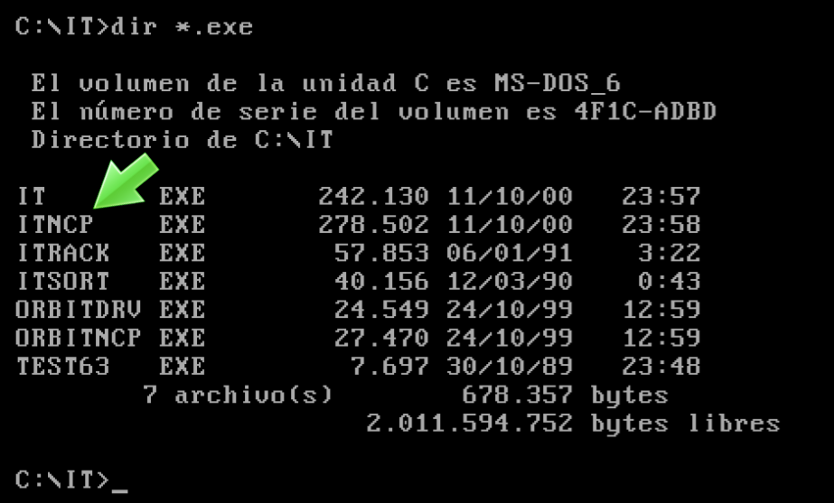
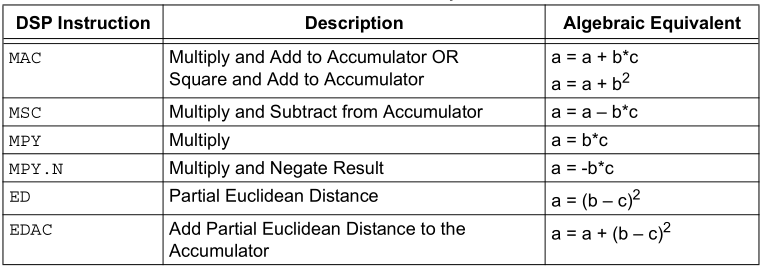
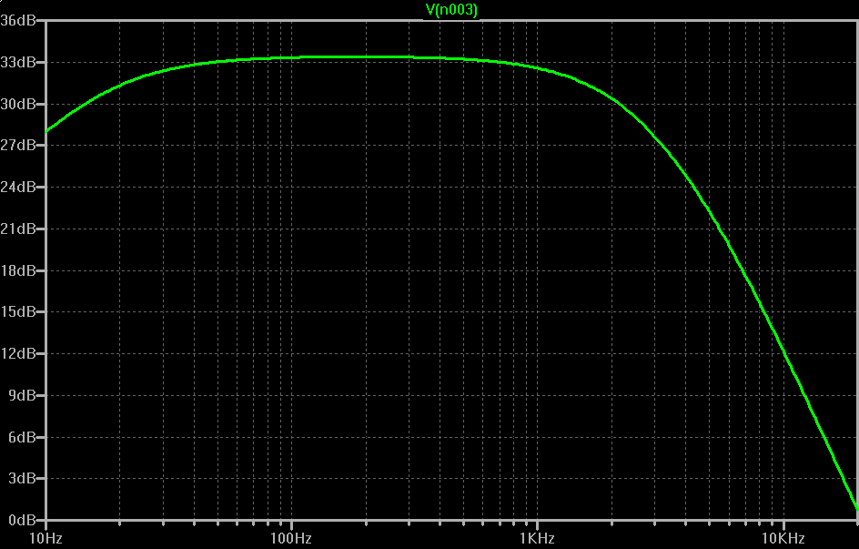

Si buscas en Google cómo usar Arduino encontrarás millones de resultados, webs de electrónica, blogs con conceptos básicos, vídeos explicativos, circuitos de ejemplo, preguntas en foros, tutoriales, etc. Si buscas cómo usar un DSP encontrarás páginas de fabricantes, notas técnicas, vídeos superficiales o cursos sobre procesamiento de señal. Este es un tema complejo. Y aunque intentaré hacerte una introducción de la forma más sencilla, algunos conceptos son muy técnicos y pueden parecerte más próximos a un trabajo de máster que a un proyecto de tiempo libre.
En cualquier caso, déjame darte la clave del artículo nada más empezar: una instrucción binaria. Una operación aritmética tan específica que cuesta entender por qué revolucionó el mundo digital. Consiste en multiplicar dos números y sumar el resultado en un acumulador. Sólo eso. Esa instrucción se llama MAC y podríamos decir que marca la diferencia entre un procesador de uso general y un DSP.
| Pues esto es un filtro digital, aunque no lo parezca. EyC. |
{kind=link}
Filtros digitales
La función principal de un DSP es filtrar. Y hacer transformadas de Fourier... para filtrar más.
Hay filtros de todo tipo. Algunos dejan pasar las frecuencias bajas, altas, o aplican un perfil de ecualización; otros sirven para suprimir una frecuencia concreta, amplificarla o detectar si está presente; los hay para realzar una señal cambiante como la voz, o suprimir un patrón de ruido de fondo. También pueden cancelar eco, aplicar efectos de distorsión o transformar la señal como nos interese.
Pero un DSP no es un filtro. Siendo un microprocesador (o microcontrolador) se parece más a una calculadora. Para entender cómo filtra un DSP imagínate una señal mezcla de varias frecuencias, como por ejemplo esta:
| Señal original, sin filtrar. EyC. |
{kind=link}
Supón que quieres quedarte con la sinusoide de mayor amplitud, porque asumes que las oscilaciones pequeñitas de mayor frecuencia son ruido y no nos interesan. En otras palabras, quieres suavizar la señal.
Una forma común de suavizar una serie temporal es calcular en cada punto la media de su valor con sus vecinos. Este procedimiento se llama media móvil y se aplica haciendo que un punto sea la media del anterior, el posterior y él mismo.
De forma general sería:
El punto i-ésimo es igual a:
El punto i-1 multiplicado por 0.3333 más ...
" i " 0.3333 más ...
" i+1 " 0.3333 .
El 0.3333 viene de dividir entre 3.
El resultado es la convolución de una ventana rectangular con la señal original y... bueno, eso no nos interesa ahora mismo. Veamos una explicación más mundana.
Las frecuencias altas varían mucho entre puntos cercanos. Y cuando promediamos los puntos estas variaciones se cancelan unas con otras. Las frecuencias bajas son variaciones suaves, luego la media entre valores próximos se parece mucho a los valores originales. Por eso la media móvil penaliza las frecuencias altas mientras conserva las más bajas.
Aplicando una media móvil de tres puntos a la señal anterior obtenemos esta curva:
| Señal suavizada con media móvil. EyC. |
{kind=link}
Aquí tenemos un ejemplo sencillo de filtro paso bajo. Tan sencillo que no controlamos ni frecuencia de corte ni atenuación. Es un filtro rudimentario, pero la idea básica está ahí. Para filtrar mejor podríamos hacer la media con, por ejemplo, 5 puntos o más. O, mejor aún, aplicar varias pasadas.
Teniendo un filtro paso bajo, se puede construir uno paso alto. Basta tomar la señal original y restarle sus bajas frecuencias. O sea, el resultado obtenido tras el filtrado anterior. Así eliminamos precisamente la frecuencia baja y nos quedamos con el resto: la alta.
Aquí conviene escribirlo un poco más formalmente. Partimos de un filtro identidad, es decir un filtro cuya salida es igual él mismo a la entrada:
El punto i-ésimo es igual a:
El punto i-1 multiplicado por 0 más ...
" i " 1 más ...
" i+1 " 0 .
Y restarle el filtro paso bajo, la media móvil anterior:
Identidad - Paso bajo = Paso alto
0 - 0.333 -0.333
1 - 0.333 = 0.666
0 - 0.333 -0.333
Es decir, nuestro filtro paso alto sería esta operación:
El punto i-ésimo es igual a:
El punto i-1 multiplicado por -0.333 más ...
" i " 0.666 más ...
" i+1 " -0.333 .
A ver, en realidad esto último vale porque son sólo tres puntos. Si haces el mismo razonamiento con más puntos es mentira, pero se parece mucho a la verdad y en este momento es más fácil de creer. Si lo aplicamos a la señal anterior aquí tenemos el resultado:
| Misma señal filtrada con un paso-alto. EyC. |
{kind=link}
Sabiendo hacer filtros paso alto y paso bajos, ya podemos combinarlos para hacer otro tipo de filtros. Un pasa banda o banda eliminada.
Detrás de este razonamiento, aparentemente sencillo y mejorable en muchos aspectos, hay un aparato matemático más sofisticado de lo que te imaginas. Sí, el principio básico es el que te he contado. Pero lo que de verdad estás haciendo es la convolución de una función ventana con la señal original. O más gráficamente, estás recortando el espectro de frecuencias y para ello usas como patrón la transformada de Fourier de la ventana.
En la práctica este tipo de filtros tienen 50, 100 o más coeficientes. Existen multitud de técnicas para calcularlos, ajustando la frecuencia de corte, el rizado, la atenuación... Si te interesa, te recomiendo The Scientist and Engineer's Guide to Digital Signal Processing.
Volviendo al tema, una señal digital puede filtrarse realizando sobre ella una operación de esta forma, eligiendo los coeficientes apropiados, claro, estos son de ejemplo:
El punto i filtrado es igual a:
El punto i-5 multiplicado por 0.009 más ...
" i-4 " 0.027 más ...
" i-3 " 0.065 más ...
" i-2 " 0.122 más ...
" i-1 " 0.177 más ...
" i " 0.201 más ...
" i+1 " 0.177 más ...
" i+2 " 0.122 más ...
" i+3 " 0.065 más ...
" i+4 " 0.027 más ...
" i+5 " 0.009
¿Ves el patrón? Tengo una fila de puntos, digamos un vector con el histórico de los valores de entrada (los i). Tengo otra fila de puntos, digamos otro vector con los coeficientes del filtro. El valor de salida i filtrado se obtiene multiplicando los valores uno a uno y sumándolo todo al final.
Aquellos filtros en los que sólo participan los valores de entrada y los pesos de cada punto se llaman filtros FIR (Finite Impulse Response). Se usan muchísimo porque son sencillos, fáciles de estudiar, la fase es lineal, estables y predecibles. Lo malo es que son largos, te puedes encontrar fácilmente con que necesitas un filtro de 300 coeficientes. Eso significa 300 operaciones de multiplicar, y luego 300 sumas, sin contar el recuperar 600 datos de memoria... por cada punto.
Para filtros más largos igual te conviene más hacer la FFT, modelar el espectro como te convenga, y hacer luego la transformada inversa... por cada punto o por cada bloque de puntos.
La instrucción MAC, decíamos al principio del artículo, "consiste en multiplicar dos números y sumar el resultado en un acumulador". ¿Empiezas a ver para qué?
Hardware dedicado
La ALU, seguramente lo recuerdes, es la parte del procesador encargada de hacer operaciones aritméticas (sumar, restar, casi siempre multiplicar y a veces dividir). De ahí su nombre: Unidad Aritmético-Lógica. Se diseñan para operar con números enteros. Porque las operaciones con enteros son infinitamente más comunes que las de coma flotante.
¿Significa que un procesador no puede calcular decimales? Claro que puede. Una CPU puede hacer cualquier operación con bits, siempre que tenga memoria y tiempo suficiente para ello. Lo mismo que tú calculas decimales usando lápiz y papel, hay algoritmos para operar con decimales usando sólo números enteros. Eso sí, para hacer una suma se requieren varias operaciones seguidas y por tanto este tipo de operaciones son más lentas.
La diferencia entre procesamiento entero, coma flotante y coma fija es algo que ya tuvimos ocasión de ver en este otro artículo: La presión atmosférica, BMP280
La Unidad de Punto Flotante (FPU) es un módulo hardware pensado para cálculos con decimales. Los números en coma flotante se guardan utilizando un formato especial llamado IEEE-754. El hardware está diseñado para trabajar en este formato y permite hacer operaciones matemáticas directamente en una instrucción. Simplificando así los algoritmos y acelerando los cálculos.
Los primeros ordenadores no tenían FPU. No les hacía falta. Las empresas preferían operar con aritmética de punto fijo para tener bien controlados los redondeos en las operaciones. Y un usuario doméstico no requería velocidad en dicho tipo de cálculos.
Durante mucho tiempo llamábamos coprocesador matemático a la Unidad de Punto Flotante y se compraba como un chip aparte (Intel 8087), bastante caro. Algunos programas, que necesitaban hacer cálculos intensivos, tenían dos versiones: una para quienes tenían coprocesador, y otra para los que no. La segunda versión era más grande y más lenta pues tenían que emular estas operaciones complejas a partir de operaciones más sencillas.
|  |
| Algunos programas tenían dos versiones, NCP significa sin co-procesador. EyC. |
{kind=link}
Desde el i486 (principio de los 90) la arquitectura Intel y compatibles incluyen una FPU integrada. Algunas arquitecturas como la que usa Raspberry Pi también tienen FPU y ciertos microcontroladores avanzados como el ESP32. Pero otros muy conocidos, sin embargo, no tienen, es el caso de Arduino, ESP8266 o los PIC clásicos.
Volviendo de nuevo al tema, un microcontrolador sin DSP puede hacer Procesamiento Digital de Señales de la misma manera que uno sin FPU puede hacer operaciones en coma flotante. Los cálculos DSP son el tipo de operaciones que puede realizar sin mayor problema cualquier procesador.
Ahora bien, en los filtros que hemos explicado antes, para calcular la muestra i-ésima (el punto i) necesitas operar con vectores de 50, 100 o 300 puntos anteriores. O tienes que calcular la FFT y la iFFT. Y todas esas operaciones deben hacerse entre una muestra y la siguiente. ¿Te imaginas a qué velocidad tiene que funcionar para tener un rendimiento aceptable? Cuanto más veloz sea el procesamiento, mejores filtros o más muestras por segundo podremos procesar.
Y por eso necesitamos optimizarlo por hardware. ¿Qué características técnicas son deseables en el hardware de un DSP?
Frecuencia de reloj. Obviamente, a más instrucciones por segundo mayor velocidad. Para el oscilador se emplea un cristal de cuarzo. Existen cristales de más de 100MHz, pero tener frecuencias de radio VHF circulando por las pistas de una placa de audio o vídeo no es buena idea porque pueden perjudicar a otros sistemas. Así que se utilizan multiplicadores de frecuencia por PLL.
¿Cómo se multiplica la frecuencia con un PLL? Pues intercalando un divisor en el bucle del PLL, de forma que este -para igualar la frecuencia que está viendo- debe generar una frecuencia múltiplo de la original. ¿Ingenioso, verdad?
Además de velocidad, necesitaremos memoria, mucha memoria. Memoria flash donde guardar programas y algoritmos complicados. Y RAM para coeficientes de los filtros, valores anteriores de la señal de entrada y otras operaciones. Es más, como sabemos que muy a menudo vamos a operar con dos vectores, yo pediría bancos de memoria con acceso simultáneo. Lo mejor es poder acceder al mismo tiempo a un dato del banco X y otro del banco Y. Y eso sólo es posible si los buses de memoria están separados.
Los coeficientes de los filtros suelen ser constantes, podríamos guardarlos en la memoria Flash que es más barata. Sin embargo tiene una pega: a diferencia de la RAM, su contenido se lee por medio de instrucciones especiales. Si de verdad queremos usarla para guardar datos es imprescindible acceder a ella igual que a la RAM. Por eso muchos DSP permiten mapear una parte de la Flash a direcciones RAM y así se puede acceder como si de memoria RAM se tratara.
En cuanto a los registros del procesador, al multiplicar dos números de n bits el resultado es un número el doble de grande. Y piensa que luego van sumándose todos los resultados. Necesitaremos un acumulador lo suficientemente grande como para que no se desborde mientras operamos. Es más, ahora que lo pienso, algunas operaciones con DSP se hacen con números complejos. Necesitaremos no uno, sino dos acumuladores. Para la parte real y para la imaginaria.
Otra característica de los DSP es el buffer circular. Si trabajamos con las 100 últimas muestras, entonces la muestra 101 sobrescribirá a la muestra 1, la 102 a la 2, y así sucesivamente. Y el puntero se incrementará adecuadamente apuntando a la muestra más antigua, que sería la número 3. Eso se llama buffer circular y -sin entrar en detalle- se consigue haciendo aritmética modular con los punteros de memoria.
Hablando de hardware para generar direcciones de memoria de forma enrevesada tenemos lo que se llama Bit Reverse Mode. A ver cómo te lo explico... Si vas a contar de 0 a 7 puedes hacerlo en orden 0, 1, 2, 3, 4, 5, 6 y 7. O puedes darle la vuelta a los bits poniendo el menos significativo a la izquierda. Lo cual daría esta secuencia: 0, 4, 2, 6, 1, 5, 3 y 7. ¿Para qué? mira esta imagen de Wikipedia sobre Fast Fourier Transform.
| Uno de los algoritmos más usados para calcular la FFT utiliza Bit Reverse Mode. Wikipedia. |
{kind=link}
Por supuesto también necesitaremos instrucciones específicas y optimizadas como la ya mencionada MAC y otras:
|  |
| Los DSP incluyen operaciones concretas de uso habitual en cálculo de señal. Microchip. |
{kind=link}
Los DSP tienen cosas más específicas, como prefetch, aritmética de saturación, FPU o similar, desplazador de barril. Otros cuentan con controladoras de DMA para acceder al ADC o al PWM sin pasar por código. Temporizadores, interfaces I2C, SPI o USB, codecs para captura de audio, instrucciones de compresión o descompresión por hardware, rutinas de cifrado, multicore, soporte de vídeo, puertos ethernet, etc. Y, eso sí, patillas, cientos de patillas.
El dsPIC30F3012
Para mis proyectos voy a usar el integrado dsPIC30F3012. Algunos me diréis que llego quince años tarde. No es el mejor ejemplo de DSP, ni tampoco el más usado. De hecho carece de ciertas funciones básicas en un DSP moderno.
De hecho ni siquiera es un microprocesador sino un microcontrolador, y por esta razón no se le llama DSP sino DSC, de Digital Signal Controller. A cambio es mucho más simple que un DSP. Además, al ser básicamente un PIC con módulo DSP se aprecian fácilmente las características añadidas. Yo opino que es un buen micro para introducirse; aunque sin duda los habrá mejores.
Los chips de la gama dsPIC30F son baratos, fáciles de conseguir, se pueden programar con el mismo software y hardware que otros PICs y los hacen en formato DIP. Este concretamente sólo tiene 18 patillas y se puede programar con los programadores más comunes.
Por otro lado, son DSP muy sencillos. Pensados para aplicaciones tales como el control de motores. Si necesitamos algo más potente nos iríamos a la gama dsPIC33, pero la mayoría de ellos no toleran 5V, muchos sólo los hacen en SMD y como mínimo tienen 28 patillas. Si estamos pensado en proyectos más exigentes ya tendríamos que buscar procesadores de fabricantes como Analog o TI. Fuera del alcance de este artículo.
Los DSP son complicados y su curva de aprendizaje algo dura. Al principio, sobre todo, necesitaremos consultar la documentación a cada paso. Conviene tener a mano (y haber leído al menos la introducción de) estos documentos:
- dsPIC30F/33F Programmer’s Reference Manual. Explica el catálogo de instrucciones disponibles, la arquitectura del controlador, los registros y la forma de operar estos dispositivos en general.
- dsPIC30F Family Reference Manual. Detalla cómo utilizar los módulos hardware disponibles en los chips de esta familia, así como la disposición de la memoria.
- dsPIC30F2011/2012/3012/3013 Data Sheet. Te cuenta qué módulos tiene concretamente este chip y los detalles sobre su programación.
- dsPIC30F3012/3013 Family Silicon Errata and Data Sheet Clarification. Te explica por qué tu proyecto no funciona y llevas horas intentando arreglar un error que no es tuyo.
| El silicio también tiene bugs. Microchip. |
{kind=link}
Si fallan los enlaces podéis buscar directamente por el título del documento.
El dsPIC30F3012 puede trabajar hasta 30 MIPS (Millones de Instrucciones por Segundo). Cuenta con 24kb de flash y 2kb de RAM. Una parte de esta flash se puede mapear a RAM. Tiene 16 registros de uso general de 16 bits y dos acumuladores de 40. Módulo ADC de 12 bits, comunicación UART, I2C o SPI, salida PWM, y más cosas. Este modelo no tiene DAC (Conversor Digital a Analógico), si bien podríamos usar la salida PWM. O incluso un pin cualquiera de GPIO para hacernos un 1bit-DAC.
Tampoco cuenta con Unidad de Punto Flotante. La suple por medio de un formato numérico llamado fraccional. En dicho formato, un número entero de 16 bits entre -32768 y 32767 se interpreta como si fuera un número decimal entre -1 y 0.99997. Tiene una precisión limitada pero en muchos casos suficiente.
El ADC se puede temporizar para trabajar a una frecuencia prefijada con un timer de forma independiente al resto del programa.
De los 16 registros de trabajo, no siempre podemos usarlos todos, ya que algunos tienen funciones prefijadas en algunas instrucciones:
| Algunos registros tienen funciones prefijadas en ciertas instrucciones. Microchip. |
{kind=link}
En la tabla anterior se hace referencia a memoria X y memoria Y. Para llevar a cabo la instrucción MAC en un solo ciclo, los dsPIC30F pueden acceder a dos bancos de memoria a la vez. Bueno, realmente la memoria es la misma, pero hay una zona que se puede direccionar en paralelo al resto. Eso sí, sólo en operaciones de lectura. A la memoria global se le llama X, y a esta zona especial la llamamos Y.
Una vez visto por encima, lo mejor para conocer el integrado es empezar usarlo. Así que antes de seguir avanzando y entrar en detalle voy a proponer un esquema sencillo que me sirva para hacer distintas pruebas.
Esquema eléctrico
Este es el esquema. Tendemos una entrada analógica, comunicación por puerto serie para depuración, los pines para conectar el programador ICSP y algunos LEDs.
| Esquema propuesto para empezar a practicar con el dsPIC. Click para ampliar. EyC. |
{kind=link}
La alimentación la tomaremos del programador ICSP. C1 y C2 se encargarán de filtrar los picos de consumo. El LED L1 indica cuándo el circuito está alimentado.
La señal de audio entra por el conector J1 y llega al potenciómetro de volumen R5. Dicha señal está referida a masa o al negativo de alimentación. El condensador C3 es necesario, pues, para bloquear la componente continua y acoplar la referencia a la masa virtual usada en el operacional. C3 forma junto a R6 un filtro paso alto cuyo corte de frecuencia se sitúa en torno a los 16Hz.
De ahí alcanzamos la patilla inversora de IC2A, configurado como amplificador inversor. La ganancia de esta etapa es 47 veces (unos 34dB). Esta ganancia tan alta sólo es válida para pruebas, no es recomendable como regla general.
El condensador C4, en paralelo con la resistencia de realimentación R7, facilita el paso a las frecuencias mayores. Proporcionando así una vía de menor resistencia y por tanto menor amplificación. El corte de este filtro viene dado por la constante RC de R7 y C4, en este caso unos 3386Hz.
Tras el amplificador viene un segundo filtro paso bajo compuesto por R8 y C5, también con corte en 3386Hz. Y de ahí a IC2B configurado como buffer para que la impedancia R8 no afecte a la medida. Finalmente aplicamos la señal ya filtrada y amplificada al pin 4, correspondiente al segundo canal del ADC.
La etapa de entrada que acabamos de describir tiene una ganancia de 34dB. Y su respuesta en frecuencia será el resultado de combinar tres filtros: un filtro paso alto de primer orden en 16Hz, y dos paso bajo de primer orden en 3386Hz.
|  |
| Respuesta en frecuencia de la etapa de entrada. EyC. |
{kind=link}
Y te preguntarás, ¿por qué usar un filtro analógico si es más fácil usar uno digital ya dentro del DSP? Debido al efecto de aliasing. Todas las frecuencias que superen la mitad de la de muestreo se representarán como frecuencias inferiores. Sin el filtro, y con una frecuencia de muestreo de 20kHz -por ejemplo- una señal de 2kHz y otra de 18kHz se verían idénticas. Con este filtro la señal de 18kHz se verá muy atenuada.
Con una ganancia de 47 veces, el corte del ancho de banda del operacional está teóricamente en 21kHz, por tanto no nos afecta. De cómo usar un operacional y su respuesta en frecuencia ya habíamos hablado en: Preamplificador micrófono electret: operacional.
Como el LM358 no es un amplificador rail-to-rail, su tensión de salida máxima y mínima nunca llega a alcanzar los valores de alimentación positiva y negativa. Por ejemplo, alimentando el circuito con 5V, la salida de IC2 podría tomar valores entre casi 0 y 3.5V. Aquí entra en juego el divisor resistivo formado por R1, R2, R3 y R4. En la unión de R3 y R4 encontraremos una tensión de 0.85V, un valor suficientemente alejado de 0 como para permitir al LM358 llegar sin distorsión. De igual modo, en la unión de R1 y R2 encontraremos 3.26V, donde el integrado también puede llegar cómodamente. En la unión de R2 y R3, al ser ambas de igual valor, habrá una tensión a medio camino entre las dos.
Los márgenes inferior y superior servirán como referencias al Conversor Analógico Digital. Mientras que el valor intermedio lo usaremos de masa virtual en la patilla no inversora de IC2A. Los valores de la tensión no son exactos debido a la tolerancia de las resistencias; pero tampoco son críticos.
Como oscilador usaremos un cristal de cuarzo de 20MHz. El dsPIC30F3012 cuenta con múltiples modos de oscilación, incluyendo oscilador interno o cristal externo. Su PLL es capaz de multiplicar internamente la frecuencia del oscilador x4, x8 o x16 y también tiene un divisor por 2 y por 3 lo cual permite múltiples combinaciones. Siempre que no sobrepasemos los 120MHz. Esta tabla muestra los diferentes modos:
| Modos de oscilación del dsPIC. Microchip. |
{kind=link}
Los modos válidos para un cristal de alta frecuencia son los HS, marcados en verde. Podríamos usar todas las combinaciones a excepción de la marcada en rojo; pues 20MHz entre 2 da 10MHz, y multiplicado por 16 serían 160MHz. Dicha frecuencia está por encima de la máxima admitida. Elegiré el modo HS/2 w/PLL8x para funcionar a 80MHz.
Los LED L2 a L5 están conectados a patillas de I/O y los usaremos libremente en función del proyecto que vayamos a hacer. Finalmente, aquí tenemos el esquema ya montado sobre una protoboard:
| Esquema anterior sobre una placa de pruebas. EyC. |
{kind=link}
Proyectos para explorar
Lo siguiente es ir haciendo pequeños proyectos para aprender. Tu crees que ya tienes superado lo de encender y apagar un LED. Aún así es un buen comienzo para saber si, por ejemplo, nuestro chip trabaja a la frecuencia de reloj esperada. A qué voltajes funciona bien; si el oscilador es estable o si necesitamos filtrar mejor la alimentación o añadir capacidades. También es útil para aprender a usar los temporizadores.
Lo siguiente será definir variables en una zona de memoria u otra, aquí cada compilador es diferente. Aprenderemos a configurar un buffer circular. A usar la instrucción MAC con el prefech. Y a trabajar con el formato fraccionario. Finalmente habrá que ver cómo se configura el ADC temporizado.
| Un búfer circular se configura fácilmente. |
{kind=link}
Con todo lo anterior estamos listos para hacer un detector de señal, por ejemplo. Y si además añadimos un filtro puede convertirse en un detector de bajos. Con un filtro para bajos, otro para medios y uno más de agudos podríamos convertirlo en un psicodélico.
O quizá podríamos tomar un motor y conectarlo con un sensor hall u óptico para obtener la frecuencia de rotación. De tal modo que encendamos un LED cuando se alcance la velocidad de rotación esperada y otros si está por encima o por debajo de dicha frecuencia. O, buscando algo más avanzado, ¿qué tal conectar el motor a la salida PWM para hacerlo rotar siempre a una velocidad precisa mediante un control PID insertado en el bucle de un PLL por software?
Espero que te haya resultado interesante esta introducción al mundo de los DSP. Te dejo los ficheros usados para este artículo, y algunos proyectos de los nombrados antes en GitHub: electronicayciencia/dspic101.
Por si tienes curiosidad, aquí te dejo un pequeño ejemplo de cómo multiplicar dos vectores. Una premisa básica de un DSP es poder hacer la operación de un filtro FIR iterando sobre una sola instrucción.